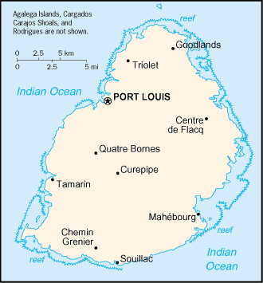
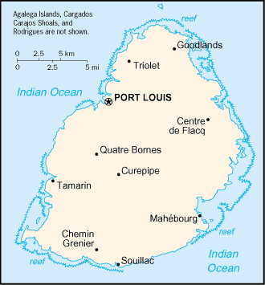

-
Introduction :: Mauritius
-
Background:Although known to Arab and Malay sailors as early as the 10th century, Mauritius was first explored by the Portuguese in the 16th century and subsequently settled by the Dutch - who named it in honor of Prince Maurits van NASSAU - in the 17th century. The French assumed control in 1715, developing the island into an important naval base overseeing Indian Ocean trade, and establishing a plantation economy of sugar cane. The British captured the island in 1810, during the Napoleonic Wars. Mauritius remained a strategically important British naval base, and later an air station, playing an important role during World War II for anti-submarine and convoy operations, as well as the collection of signals intelligence. Independence from the UK was attained in 1968. A stable democracy with regular free elections and a positive human rights record, the country has attracted considerable foreign investment and has one of Africa's highest per capita incomes.
-
Geography :: Mauritius
-
Location:Southern Africa, island in the Indian Ocean, about 800 km (500 mi) east of MadagascarGeographic coordinates:20 17 S, 57 33 EMap references:AfricaArea:total: 2,040 sq kmland: 2,030 sq kmwater: 10 sq km
note: includes Agalega Islands, Cargados Carajos Shoals (Saint Brandon), and Rodrigues
country comparison to the world: 181Area - comparative:almost 11 times the size of Washington, DCLand boundaries:0 kmCoastline:177 kmMaritime claims:territorial sea: 12 nmexclusive economic zone: 200 nmcontinental shelf: 200 nm or to the edge of the continental marginmeasured from claimed archipelagic straight baselinesClimate:tropical, modified by southeast trade winds; warm, dry winter (May to November); hot, wet, humid summer (November to May)Terrain:small coastal plain rising to discontinuous mountains encircling central plateauElevation:0 m lowest point: Indian Ocean828 highest point: Mont PitonNatural resources:arable land, fishLand use:agricultural land: 43.8% (2011 est.)arable land: 38.4% (2011 est.) / permanent crops: 2% (2011 est.) / permanent pasture: 3.4% (2011 est.)forest: 17.3% (2011 est.)other: 38.9% (2011 est.)Irrigated land:190 sq km (2012)Population distribution:population density is one of the highest in the world; urban cluster are found throught the main island, with a greater density in and around Port Luis; population on Rodrigues Island is spread across the island with a slightly denser cluster on the north coastNatural hazards:cyclones (November to April); almost completely surrounded by reefs that may pose maritime hazardsEnvironment - current issues:water pollution, degradation of coral reefs; soil erosion; wildlife preservation; solid waste disposalEnvironment - international agreements:party to: Antarctic-Marine Living Resources, Biodiversity, Climate Change, Climate Change-Kyoto Protocol, Desertification, Endangered Species, Environmental Modification, Hazardous Wastes, Law of the Sea, Marine Life Conservation, Ozone Layer Protection, Ship Pollution, Wetlandssigned, but not ratified: none of the selected agreementsGeography - note:the main island, from which the country derives its name, is of volcanic origin and is almost entirely surrounded by coral reefs; former home of the dodo, a large flightless bird related to pigeons, driven to extinction by the end of the 17th century through a combination of hunting and the introduction of predatory species -
People and Society :: Mauritius
-
Population:1,364,283 (July 2018 est.)country comparison to the world: 155Nationality:noun: Mauritian(s)adjective: MauritianEthnic groups:Indo-Mauritian (compose approximately two thirds of the total population), Creole, Sino-Mauritian, Franco-Mauritian
note: Mauritius has not had a question on ethnicity on its national census since 1972
Languages:Creole 86.5%, Bhojpuri 5.3%, French 4.1%, two languages 1.4%, other 2.6% (includes English, the official language of the National Assembly, which is spoken by less than 1% of the population), unspecified 0.1% (2011 est.)Religions:Hindu 48.5%, Roman Catholic 26.3%, Muslim 17.3%, other Christian 6.4%, other 0.6%, none 0.7%, unspecified 0.1% (2011 est.)Demographic profile:Mauritius has transitioned from a country of high fertility and high mortality rates in the 1950s and mid-1960s to one with among the lowest population growth rates in the developing world today. After World War II, Mauritius’ population began to expand quickly due to increased fertility and a dramatic drop in mortality rates as a result of improved health care and the eradication of malaria. This period of heightened population growth – reaching about 3% a year – was followed by one of the world’s most rapid birth rate declines.
The total fertility rate fell from 6.2 children per women in 1963 to 3.2 in 1972 – largely the result of improved educational attainment, especially among young women, accompanied by later marriage and the adoption of family planning methods. The family planning programs’ success was due to support from the government and eventually the traditionally pronatalist religious communities, which both recognized that controlling population growth was necessary because of Mauritius’ small size and limited resources. Mauritius’ fertility rate has consistently been below replacement level since the late 1990s, a rate that is substantially lower than nearby countries in southern Africa.
With no indigenous population, Mauritius’ ethnic mix is a product of more than two centuries of European colonialism and continued international labor migration. Sugar production relied on slave labor mainly from Madagascar, Mozambique, and East Africa from the early 18th century until its abolition in 1835, when slaves were replaced with indentured Indians. Most of the influx of indentured labor – peaking between the late 1830s and early 1860 – settled permanently creating massive population growth of more than 7% a year and reshaping the island’s social and cultural composition. While Indians represented about 12% of Mauritius’ population in 1837, they and their descendants accounted for roughly two-thirds by the end of the 19th century. Most were Hindus, but the majority of the free Indian traders were Muslims.
Mauritius again turned to overseas labor when its success in clothing and textile exports led to a labor shortage in the mid-1980s. Clothing manufacturers brought in contract workers (increasingly women) from China, India, and, to a lesser extent Bangladesh and Madagascar, who worked longer hours for lower wages under poor conditions and were viewed as more productive than locals. Downturns in the sugar and textile industries in the mid-2000s and a lack of highly qualified domestic workers for Mauritius’ growing services sector led to the emigration of low-skilled workers and a reliance on skilled foreign labor. Since 2007, Mauritius has pursued a circular migration program to enable citizens to acquire new skills and savings abroad and then return home to start businesses and to invest in the country’s development.
Age structure:0-14 years: 19.9% (male 138,707 /female 132,774)15-24 years: 14.52% (male 100,281 /female 97,836)25-54 years: 43.6% (male 297,558 /female 297,243)55-64 years: 11.81% (male 76,620 /female 84,554)65 years and over: 10.17% (male 57,094 /female 81,616) (2018 est.)population pyramid: The World Factbook Field Image ModalAfrica :: Mauritius Print
The World Factbook Field Image ModalAfrica :: Mauritius Print Image DescriptionThis is the population pyramid for Mauritius. A population pyramid illustrates the age and sex structure of a country's population and may provide insights about political and social stability, as well as economic development. The population is distributed along the horizontal axis, with males shown on the left and females on the right. The male and female populations are broken down into 5-year age groups represented as horizontal bars along the vertical axis, with the youngest age groups at the bottom and the oldest at the top. The shape of the population pyramid gradually evolves over time based on fertility, mortality, and international migration trends.
Image DescriptionThis is the population pyramid for Mauritius. A population pyramid illustrates the age and sex structure of a country's population and may provide insights about political and social stability, as well as economic development. The population is distributed along the horizontal axis, with males shown on the left and females on the right. The male and female populations are broken down into 5-year age groups represented as horizontal bars along the vertical axis, with the youngest age groups at the bottom and the oldest at the top. The shape of the population pyramid gradually evolves over time based on fertility, mortality, and international migration trends.
For additional information, please see the entry for Population pyramid on the Definitions and Notes page under the References tab.Dependency ratios:total dependency ratio: 41.6 (2015 est.)youth dependency ratio: 27.5 (2015 est.)elderly dependency ratio: 14.1 (2015 est.)potential support ratio: 7.1 (2015 est.)Median age:total: 35.7 yearsmale: 34.5 yearsfemale: 36.7 years (2018 est.)country comparison to the world: 77Population growth rate:0.57% (2018 est.)country comparison to the world: 150Birth rate:12.8 births/1,000 population (2018 est.)country comparison to the world: 152Death rate:7.1 deaths/1,000 population (2018 est.)country comparison to the world: 127Net migration rate:0 migrant(s)/1,000 population (2017 est.)country comparison to the world: 92Population distribution:population density is one of the highest in the world; urban cluster are found throught the main island, with a greater density in and around Port Luis; population on Rodrigues Island is spread across the island with a slightly denser cluster on the north coastUrbanization:urban population: 40.8% of total population (2018)rate of urbanization: 0.11% annual rate of change (2015-20 est.)Major urban areas - population:149,000 PORT LOUIS (capital) (2018)Sex ratio:at birth: 1.05 male(s)/female (2017 est.)0-14 years: 1.04 male(s)/female (2017 est.)15-24 years: 1.02 male(s)/female (2017 est.)25-54 years: 1 male(s)/female (2017 est.)55-64 years: 0.9 male(s)/female (2017 est.)65 years and over: 0.68 male(s)/female (2017 est.)total population: 0.97 male(s)/female (2017 est.)Maternal mortality rate:53 deaths/100,000 live births (2015 est.)country comparison to the world: 93Infant mortality rate:total: 9.5 deaths/1,000 live births (2018 est.)male: 11.3 deaths/1,000 live births (2018 est.)female: 7.7 deaths/1,000 live births (2018 est.)country comparison to the world: 139Life expectancy at birth:total population: 76 years (2018 est.)male: 72.6 years (2018 est.)female: 79.7 years (2018 est.)country comparison to the world: 95Total fertility rate:1.74 children born/woman (2018 est.)country comparison to the world: 163Contraceptive prevalence rate:63.8% (2014)Health expenditures:4.8% of GDP (2014)country comparison to the world: 148Physicians density:2.19 physicians/1,000 population (2016)Hospital bed density:3.59 beds/1,000 population (2016)Drinking water source:improved: urban: 99.9% of populationrural: 99.8% of populationtotal: 99.9% of populationunimproved: urban: 0.1% of populationrural: 0.2% of populationtotal: 0.1% of population (2015 est.)Sanitation facility access:improved: urban: 93.9% of population (2015 est.)rural: 92.6% of population (2015 est.)total: 93.1% of population (2015 est.)unimproved: urban: 6.1% of population (2015 est.)rural: 7.4% of population (2015 est.)total: 6.9% of population (2015 est.)HIV/AIDS - adult prevalence rate:NAHIV/AIDS - people living with HIV/AIDS:NAHIV/AIDS - deaths:NAObesity - adult prevalence rate:10.8% (2016)country comparison to the world: 137Education expenditures:5.1% of GDP (2017)country comparison to the world: 68Literacy:definition: age 15 and over can read and write (2015 est.)total population: 92.7% (2015 est.)male: 94.9% (2015 est.)female: 90.7% (2015 est.)School life expectancy (primary to tertiary education):total: 15 years (2015)male: 14 years (2015)female: 15 years (2015)Unemployment, youth ages 15-24:total: 23.9% (2016 est.)male: 18.3% (2016 est.)female: 31.2% (2016 est.)country comparison to the world: 50 -
Government :: Mauritius
-
Country name:conventional long form: Republic of Mauritiusconventional short form: Mauritiuslocal long form: Republic of Mauritiuslocal short form: Mauritiusetymology: island named after Prince Maurice VAN NASSAU, stadtholder of the Dutch Republic, in 1598
note: pronounced mar-i-shus
Government type:parliamentary republicCapital:name: Port Louisgeographic coordinates: 20 09 S, 57 29 Etime difference: UTC+4 (9 hours ahead of Washington, DC, during Standard Time)Administrative divisions:9 districts and 3 dependencies*; Agalega Islands*, Black River, Cargados Carajos Shoals*, Flacq, Grand Port, Moka, Pamplemousses, Plaines Wilhems, Port Louis, Riviere du Rempart, Rodrigues*, SavanneIndependence:12 March 1968 (from the UK)National holiday:Independence and Republic Day, 12 March (1968 & 1992); note - became independent and a republic on the same date in 1968 and 1992 respectivelyConstitution:history: several previous; latest adopted 12 March 1968 (2017)amendments: proposed by the National Assembly; passage of amendments affecting constitutional articles including the sovereignty of the state, fundamental rights and freedoms, citizenship, or the branches of government requires approval in a referendum by at least three-fourths majority of voters followed by a unanimous vote by the Assembly; passage of other amendments requires only two-thirds majority vote by the Assembly; amended many times, last in 2016 (2017)Legal system:civil legal system based on French civil law with some elements of English common lawInternational law organization participation:accepts compulsory ICJ jurisdiction with reservations; accepts ICCt jurisdictionCitizenship:citizenship by birth: yescitizenship by descent only: yesdual citizenship recognized: yesresidency requirement for naturalization: 5 out of the previous 7 years including the last 12 monthsSuffrage:18 years of age; universalJudicial branch:highest courts: Supreme Court of Mauritius (consists of the chief justice, a senior puisne judge, and 17 puisne judges); note - the Judicial Committee of the Privy Council (in London) serves as the final court of appealjudge selection and term of office: chief justice appointed by the president after consultation with the prime minister; senior puisne judge appointed by the president with the advice of the chief justice; other puisne judges appointed by the president with the advice of the Judicial and Legal Commission, a 4-member body of judicial officials including the chief justice; all judges serve until retirement at age 67subordinate courts: lower regional courts known as District Courts, Court of Civil Appeal; Court of Criminal Appeal; Public Bodies Appeal TribunalExecutive branch:chief of state: Acting President Paramaslyum (aka Barlen) Pillay VYAPOORY (since 23 March 2018); Vice President (vacant); note - President Ameenah GURIB-FAKIM (since 5 June 2015) resigned on 23 March 2018 amid a credit card scandalhead of government: Prime Minister Pravind JUGNAUTH (since 23 January 2017); note - Prime Minister Sir Anerood JUGNAUTH (since 17 December 2014) stepped down on 23 January 2017 in favor of his son, Pravind Kumar JUGNAUTH, who was then appointed prime minister; Sir Anerood JUGNAUTH now holds the position of Mentor Minister, a position created when he stepped downcabinet: Cabinet of Ministers (Council of Ministers) appointed by the president on the recommendation of the prime ministerelections/appointments: president and vice president indirectly elected by the National Assembly for 5-year renewable terms; election last held on 4 June 2015 (next to be held in 2020); prime minister and deputy prime minister appointed by the president, responsible to the National Assemblyelection results: Ameenah GURIB-FAKIM (independent) elected president by the National Assembly - unanimous vote; note - GURIB-FAKIM was Mauritius' first female presidentLegislative branch:description: unicameral National Assembly or Assemblee Nationale (70 seats maximum; 62 members directly elected multi-seat constituencies by simple majority vote and up to 8 seats allocated to non-elected party candidates by the Office of Electoral Commissioner; members serve a 5-year term)elections: last held on 10 December 2014 following dissolution of the Assembly on 6 October 2014 (next to be held by 2019)election results: percent of vote by party - Alliance Lepep 49.8%, PTR-MMM 38.5%, FSM 2.1%, OPR 1.1%, other 8.5%; elected seats by party - Alliance Lepep 47, PTR-MMM 13, OPR 2; appointed seats Alliance Lepep 4, PTR-MMM 3Political parties and leaders:Alliance Lepep (Alliance of the People) [Pravind JUGNAUTH] (coalition includes MSM, PMSD, and ML)
Labor Party (Parti Travailliste) or PTR or MLP [Navinchandra RAMGOOLAM]
Mauritian Militant Movement (Mouvement Militant Mauricien) or MMM [Paul BERENGER]
Mauritian Social Democratic Party (Parti Mauricien Social Democrate) or PMSD [Xavier Luc DUVAL]
Mauritian Solidarity Front (Front Solidarite Mauricienne) or FSM [Cehl FAKEERMEEAH, aka Cehl MEEAH]
Militant Socialist Movement (Mouvement Socialist Mauricien) or MSM [Pravind JUGNAUTH]
Muvman Liberater or ML [Ivan COLLENDAVELLOO]
Rodrigues Peoples Organization (Organisation du Peuple Rodriguais) or OPR [Serge CLAIR]International organization participation:ACP, AfDB, AOSIS, AU, C, CD, COMESA, CPLP (associate), FAO, G-77, IAEA, IBRD, ICAO, ICC (NGOs), ICCt, ICRM, IDA, IFAD, IFC, IFRCS, IHO, ILO, IMF, IMO, IMSO, InOC, Interpol, IOC, IOM, IPU, ISO, ITSO, ITU, ITUC (NGOs), MIGA, NAM, OIF, OPCW, PCA, SAARC (observer), SADC, UN, UNCTAD, UNESCO, UNIDO, UNWTO, UPU, WCO, WFTU (NGOs), WHO, WIPO, WMO, WTODiplomatic representation in the US:chief of mission: Ambassador Sooroojdev PHOKEER (since 3 August 2015)chancery: 1709 N Street NW, Washington, DC 20036; administrative offices at 3201 Connecticut Avenue NW, Suite 441, Washington, DC 20036telephone: [1] (202) 244-1491 through 1492FAX: [1] (202) 966-0983Diplomatic representation from the US:chief of mission: Ambassador David D. REIMER (since 6 February 2018); note - also accredited to Seychellesembassy: 4th Floor, Rogers House, John Kennedy Avenue, Port Louismailing address: international mail: P.O. Box 544, Port Louis; US mail: American Embassy, Port Louis, US Department of State, Washington, DC 20521-2450telephone: [230] 202-4400FAX: [230] 208-9534Flag description:four equal horizontal bands of red (top), blue, yellow, and green; red represents self-determination and independence, blue the Indian Ocean surrounding the island, yellow has been interpreted as the new light of independence, golden sunshine, or the bright future, and green can symbolize either agriculture or the lush vegetation of the islandnote: while many national flags consist of three - and in some cases five - horizontal bands of color, the flag of Mauritius is the world's only national flag to consist of four horizontal color bands
National symbol(s):dodo bird, Trochetia Boutoniana flower; national colors: red, blue, yellow, greenNational anthem:name: Motherlandlyrics/music: Jean Georges PROSPER/Philippe GENTILnote: adopted 1968
-
Economy :: Mauritius
-
Economy - overview:
Since independence in 1968, Mauritius has undergone a remarkable economic transformation from a low-income, agriculturally-based economy to a diversified, upper middle-income economy with growing industrial, financial, and tourist sectors. Mauritius has achieved steady growth over the last several decades, resulting in more equitable income distribution, increased life expectancy, lowered infant mortality, and a much-improved infrastructure.
The economy currently depends on sugar, tourism, textiles and apparel, and financial services, but is expanding into fish processing, information and communications technology, education, and hospitality and property development. Sugarcane is grown on about 90% of the cultivated land area but sugar makes up only around 3-4% of national GDP. Authorities plan to emphasize services and innovation in the coming years. After several years of slow growth, government policies now seek to stimulate economic growth in five areas: serving as a gateway for international investment into Africa; increasing the use of renewable energy; developing smart cities; growing the ocean economy; and upgrading and modernizing infrastructure, including public transportation, the port, and the airport.
Mauritius has attracted more than 32,000 offshore entities, many aimed at commerce in India, South Africa, and China. The Mauritius International Financial Center is under scrutiny by international bodies promoting fair tax competition and Mauritius has been cooperating with the European Union and the United states in the automatic exchange of account information. Mauritius is also a member of the OECD/G20’s Inclusive Framework on Base Erosion and Profit Shifting and is under pressure to review its Double Taxation Avoidance Agreements. The offshore sector is vulnerable to changes in the tax framework and authorities have been working on a Financial Services Sector Blueprint to enable Mauritius to transition to a jurisdiction of higher value added. Mauritius’ textile sector has taken advantage of the Africa Growth and Opportunity Act, a preferential trade program that allows duty free access to the US market, with Mauritian exports to the US growing by 35.6 % from 2000 to 2014. However, lack of local labor as well as rising labor costs eroding the competitiveness of textile firms in Mauritius.
Mauritius' sound economic policies and prudent banking practices helped mitigate negative effects of the global financial crisis in 2008-09. GDP grew in the 3-4% per year range in 2010-17, and the country continues to expand its trade and investment outreach around the globe. Growth in the US and Europe fostered goods and services exports, including tourism, while lower oil prices kept inflation low. Mauritius continues to rank as one of the most business-friendly environments on the continent and passed a Business Facilitation Act to improve competitiveness and long-term growth prospects. A new National Economic Development Board was set up in 2017-2018 to spearhead efforts to promote exports and attract inward investment.
GDP (purchasing power parity):$28.27 billion (2017 est.)$27.23 billion (2016 est.)$26.23 billion (2015 est.)note: data are in 2017 dollars
country comparison to the world: 137GDP (official exchange rate):$13.33 billion (2017 est.) (2017 est.)GDP - real growth rate:3.8% (2017 est.)3.8% (2016 est.)3.6% (2015 est.)country comparison to the world: 88GDP - per capita (PPP):$22,300 (2017 est.)$21,500 (2016 est.)$20,800 (2015 est.)note: data are in 2017 dollars
country comparison to the world: 86Gross national saving:16.9% of GDP (2017 est.)15.8% of GDP (2016 est.)15.2% of GDP (2015 est.)country comparison to the world: 122GDP - composition, by end use:household consumption: 81% (2017 est.)government consumption: 15.1% (2017 est.)investment in fixed capital: 17.3% (2017 est.)investment in inventories: -0.4% (2017 est.)exports of goods and services: 42.1% (2017 est.)imports of goods and services: -55.1% (2017 est.)GDP - composition, by sector of origin:agriculture: 4% (2017 est.)industry: 21.8% (2017 est.)services: 74.1% (2017 est.)Agriculture - products:sugarcane, tea, corn, potatoes, bananas, pulses; cattle, goats; fishIndustries:food processing (largely sugar milling), textiles, clothing, mining, chemicals, metal products, transport equipment, nonelectrical machinery, tourismIndustrial production growth rate:3.2% (2017 est.)country comparison to the world: 98Labor force:633,900 (2017 est.)country comparison to the world: 153Labor force - by occupation:agriculture: 8%industry: 29.8%services: 62.2% (2014 est.)Unemployment rate:7.1% (2017 est.)7.3% (2016 est.)country comparison to the world: 111Population below poverty line:8% (2006 est.)Distribution of family income - Gini index:35.9 (2012 est.)39 (2006 est.)country comparison to the world: 92Budget:revenues: 2.994 billion (2017 est.)expenditures: 3.038 billion (2017 est.)Taxes and other revenues:22.5% (of GDP) (2017 est.)country comparison to the world: 133Budget surplus (+) or deficit (-):-0.3% (of GDP) (2017 est.)country comparison to the world: 54Public debt:64% of GDP (2017 est.)66.1% of GDP (2016 est.)country comparison to the world: 60Fiscal year:1 July - 30 JuneInflation rate (consumer prices):3.7% (2017 est.)1% (2016 est.)country comparison to the world: 148Central bank discount rate:9% (31 December 2010)country comparison to the world: 33Commercial bank prime lending rate:8.5% (31 December 2017 est.)8.5% (31 December 2016 est.)country comparison to the world: 98Stock of narrow money:$3.335 billion (31 December 2017 est.)$2.833 billion (31 December 2016 est.)country comparison to the world: 120Stock of broad money:$3.335 billion (31 December 2017 est.)$2.833 billion (31 December 2016 est.)country comparison to the world: 125Stock of domestic credit:$17.16 billion (31 December 2017 est.)$13.7 billion (31 December 2016 est.)country comparison to the world: 95Current account balance:-$875 million (2017 est.)-$531 million (2016 est.)country comparison to the world: 136Exports:$2.36 billion (2017 est.)$2.359 billion (2016 est.)country comparison to the world: 136Exports - partners:France 16.7%, US 12.5%, UK 12%, South Africa 9%, Madagascar 6.7%, Italy 6.6%, Spain 5.2% (2017)Exports - commodities:clothing and textiles, sugar, cut flowers, molasses, fish, primates (for research)Imports:$4.986 billion (2017 est.)$4.406 billion (2016 est.)country comparison to the world: 130Imports - commodities:manufactured goods, capital equipment, foodstuffs, petroleum products, chemicalsImports - partners:India 17.9%, China 15.7%, France 11.1%, South Africa 9.7% (2017)Reserves of foreign exchange and gold:$5.984 billion (31 December 2017 est.)$4.967 billion (31 December 2016 est.)country comparison to the world: 92Debt - external:$19.99 billion (31 December 2017 est.)$14.34 billion (31 December 2016 est.)country comparison to the world: 92Stock of direct foreign investment - at home:NA
Stock of direct foreign investment - abroad:NA
Exchange rates:Mauritian rupees (MUR) per US dollar -35.17 (2017 est.)35.542 (2016 est.)35.542 (2015 est.)35.057 (2014 est.)30.622 (2013 est.) -
Energy :: Mauritius
-
Electricity access:electrification - total population: 100% (2016)Electricity - production:2.898 billion kWh (2016 est.)country comparison to the world: 134Electricity - consumption:2.726 billion kWh (2016 est.)country comparison to the world: 140Electricity - exports:0 kWh (2016 est.)country comparison to the world: 170Electricity - imports:0 kWh (2016 est.)country comparison to the world: 174Electricity - installed generating capacity:894,000 kW (2016 est.)country comparison to the world: 132Electricity - from fossil fuels:79% of total installed capacity (2016 est.)country comparison to the world: 86Electricity - from nuclear fuels:0% of total installed capacity (2017 est.)country comparison to the world: 142Electricity - from hydroelectric plants:7% of total installed capacity (2017 est.)country comparison to the world: 126Electricity - from other renewable sources:14% of total installed capacity (2017 est.)country comparison to the world: 62Crude oil - production:0 bbl/day (2017 est.)country comparison to the world: 172Crude oil - exports:0 bbl/day (2015 est.)country comparison to the world: 164Crude oil - imports:0 bbl/day (2015 est.)country comparison to the world: 165Crude oil - proved reserves:0 bbl (1 January 2018 est.)country comparison to the world: 168Refined petroleum products - production:0 bbl/day (2017 est.)country comparison to the world: 177Refined petroleum products - consumption:27,000 bbl/day (2016 est.)country comparison to the world: 123Refined petroleum products - exports:0 bbl/day (2015 est.)country comparison to the world: 181Refined petroleum products - imports:26,960 bbl/day (2015 est.)country comparison to the world: 102Natural gas - production:0 cu m (2017 est.)country comparison to the world: 170Natural gas - consumption:0 cu m (2017 est.)country comparison to the world: 175Natural gas - exports:0 cu m (2017 est.)country comparison to the world: 151Natural gas - imports:0 cu m (2017 est.)country comparison to the world: 157Natural gas - proved reserves:0 cu m (1 January 2014 est.)country comparison to the world: 169Carbon dioxide emissions from consumption of energy:6.429 million Mt (2017 est.)country comparison to the world: 125
-
Communications :: Mauritius
-
Telephones - fixed lines:total subscriptions: 413,100 (2017 est.)subscriptions per 100 inhabitants: 30 (2017 est.)country comparison to the world: 102Telephones - mobile cellular:total subscriptions: 1,839,500 (2017 est.)subscriptions per 100 inhabitants: 136 (2017 est.)country comparison to the world: 152Telephone system:general assessment: small system with good service (2016)domestic: monopoly over fixed-line services terminated in 2005; fixed-line teledensity roughly 30 per 100 persons; mobile-cellular services launched in 1989 with teledensity approaching 135 per 100 persons in 2016 (2016)international: country code - 230; landing point for the SAFE submarine cable that provides links to Asia and South Africa where it connects to the SAT-3/WASC submarine cable that provides further links to parts of East Africa, and Europe; satellite earth station - 1 Intelsat (Indian Ocean); new microwave link to Reunion; HF radiotelephone links to several countries (2016)Broadcast media:the government maintains control over TV broadcasting through the Mauritius Broadcasting Corporation (MBC), which only operates digital TV stations since June 2015; MBC is a shareholder in a local company that operates 2 pay-TV stations; the state retains the largest radio broadcast network with multiple stations; several private radio broadcasters have entered the market since 2001; transmissions of at least 2 international broadcasters are available (2017)Internet country code:.muInternet users:total: 717,618 (July 2016 est.)percent of population: 53.2% (July 2016 est.)country comparison to the world: 141Broadband - fixed subscriptions:total: 246,000 (2017 est.)subscriptions per 100 inhabitants: 18 (2017 est.)country comparison to the world: 102
-
Transportation :: Mauritius
-
National air transport system:number of registered air carriers: 1 (2015)inventory of registered aircraft operated by air carriers: 13 (2015)annual passenger traffic on registered air carriers: 1,466,527 (2015)annual freight traffic on registered air carriers: 168.773 million mt-km (2015)Civil aircraft registration country code prefix:3B (2016)Airports:5 (2013)country comparison to the world: 180Airports - with paved runways:total: 2 (2017)over 3,047 m: 1 (2017)914 to 1,523 m: 1 (2017)Airports - with unpaved runways:total: 3 (2013)914 to 1,523 m: 2 (2013)under 914 m: 1 (2013)Roadways:total: 2,428 km (2015)paved: 2,379 km (includes 99 km of expressways) (2015)unpaved: 49 km (2015)country comparison to the world: 172Merchant marine:total: 28 (2017)by type: general cargo 2, oil tanker 3, other 23 (2017)country comparison to the world: 130Ports and terminals:major seaport(s): Port Louis
-
Military and Security :: Mauritius
-
Military expenditures:0.19% of GDP (2016)0.18% of GDP (2015)0.15% of GDP (2014)0.19% of GDP (2013)0.14% of GDP (2012)country comparison to the world: 152Military branches:no regular military forces; Mauritius Police Force, Special Mobile Force, National Coast Guard (2014)
-
Transnational Issues :: Mauritius
-
Disputes - international:Mauritius and Seychelles claim the Chagos Islandsclaims French-administered Tromelin IslandTrafficking in persons:current situation: Mauritius is a source, transit, and destination country for men, women, and children subjected to forced labor and sex trafficking; Mauritian girls are induced or sold into prostitution, often by peers, family members, or businessmen offering other forms of employment; Mauritian adults have been identified as labor trafficking victims in the UK, Belgium, and Canada, while Mauritian women from Rodrigues Island are also subject to domestic servitude in Mauritius; Malagasy women transit Mauritius en route to the Middle East for jobs as domestic servants and subsequently are subjected to forced labor; Cambodian men are victims of forced labor on foreign fishing vessels in Mauritius’ territorial waters; other migrant workers from East and South Asia and Madagascar are also subject to forced labor in Mauritius’ manufacturing and construction sectorstier rating: Tier 2 Watch List – Mauritius does not fully comply with the minimum standards for the elimination of trafficking; however, it is making significant efforts to do so; in 2014, the government made modest efforts to address child sex trafficking but none related to adult forced labor; law enforcement lacks an understanding of trafficking crimes outside of child sex trafficking, despite increasing evidence of other forms of human trafficking; authorities made no trafficking prosecutions or convictions and made modest efforts to assist a couple of child sex trafficking victims; officials sustained an extensive public awareness campaign to prevent child sex trafficking, but no efforts were made to raise awareness or reduce demand for forced adult or child labor (2015)Illicit drugs:consumer and transshipment point for heroin from South Asia; small amounts of cannabis produced and consumed locally; significant offshore financial industry creates potential for money laundering, but corruption levels are relatively low and the government appears generally to be committed to regulating its banking industry
Africa ::
Mauritius